Jade Lam — Creative Production and Experiential Design Portfolio
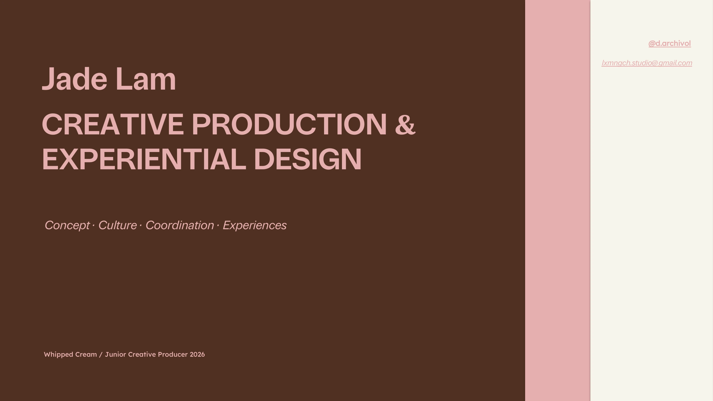
Read page 1: Introduction
Jade Lam
CREATIVE PRODUCTION &
EXPERIENTIAL DESIGN
Concept · Culture · Coordination · Experiences
Whipped Cream / Junior Creative Producer 2026
@d.archivol
lxmngch.studio@gmail.com

Read page 2: About my practice
ABOUT MY PRACTICE
Curious by Nature,
Creative by Design :D
I'm a London-based multidisciplinary creative designer driven by curiosity
about culture, human behaviour and the experiences that bring people
together.
My practice sits between creative development and hands-on production.
From participatory dining to independent theatre, I turn unexpected ideas
into tangible experiences through planning, experimentation and
collaboration.
I'm interested in how creative ideas respond to practical constraints and how
different contributors come together to deliver a shared vision.
Unexpected ideas. Thoughtfully brought to life.
JADE LAM / CREATIVE PRODUCTION 2026
02

Read page 3: Selected projects
SELECTED EXPERIENTIAL WORK
Three selected projects.
WHIPPED CREAM / JUNIOR CREATIVE PRODUCER
03
01 LINGUA FRANCA / End-to-end experiential production
02 UNSEEN MARINE / Research-led experience development
03 DAY NIGHT PRODUCTION / Creative coordination & delivery
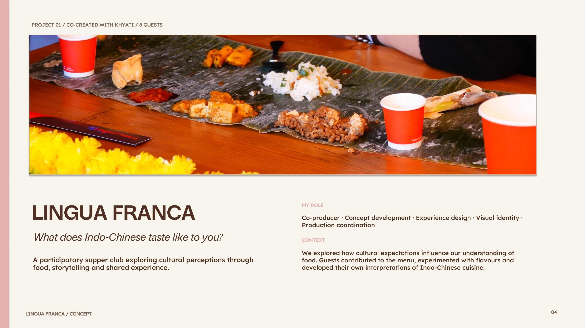
Read page 4: Lingua Franca — Concept
PROJECT 01 / CO-CREATED WITH KHYATI / 8 GUESTS
LINGUA FRANCA
What does Indo-Chinese taste like to you?
A participatory supper club exploring cultural perceptions through
food, storytelling and shared experience.
MY ROLE
Co-producer · Concept development · Experience design · Visual identity ·
Production coordination
CONTEXT
We explored how cultural expectations influence our understanding of
food. Guests contributed to the menu, experimented with flavours and
developed their own interpretations of Indo-Chinese cuisine.
LINGUA FRANCA / CONCEPT
04
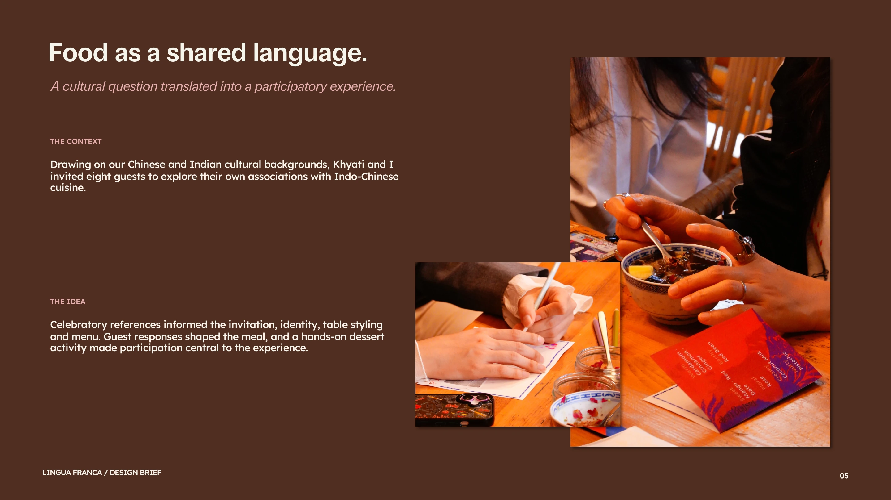
Read page 5: Lingua Franca — Design brief
Food as a shared language.
A cultural question translated into a participatory experience.
THE CONTEXT
Drawing on our Chinese and Indian cultural backgrounds, Khyati and I
invited eight guests to explore their own associations with Indo-Chinese
cuisine.
THE IDEA
Celebratory references informed the invitation, identity, table styling
and menu. Guest responses shaped the meal, and a hands-on dessert
activity made participation central to the experience.
LINGUA FRANCA / DESIGN BRIEF
05
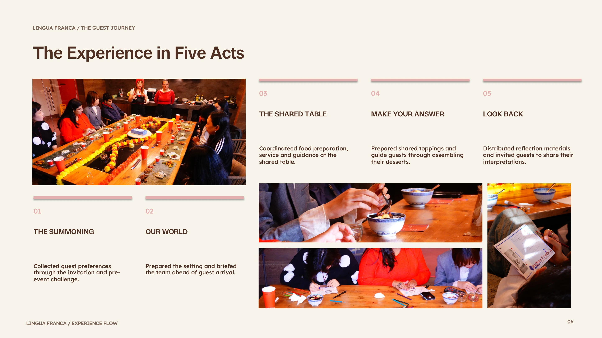
Read page 6: Lingua Franca — Guest journey
LINGUA FRANCA / THE GUEST JOURNEY
The Experience in Five Acts
01
THE SUMMONING
Collected guest preferences
through the invitation and pre-
event challenge.
02
OUR WORLD
Prepared the setting and briefed
the team ahead of guest arrival.
03
THE SHARED TABLE
Coordinateed food preparation,
service and guidance at the
shared table.
04
MAKE YOUR ANSWER
Prepared shared toppings and
guide guests through assembling
their desserts.
05
LOOK BACK
Distributed reflection materials
and invited guests to share their
interpretations.
LINGUA FRANCA / EXPERIENCE FLOW
06
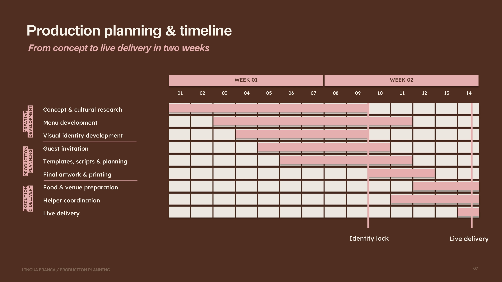
Read page 7: Lingua Franca — Production timeline
07
Production planning & timeline
LINGUA FRANCA / PRODUCTION PLANNING
WEEK 01
WEEK 02
01
02
03
04
05
06
07
08
09
10
11
12
13
14
Concept & cultural research
Menu development
Visual identity development
Guest invitation
Templates, scripts & planning
Final artwork & printing
Food & venue preparation
Helper coordination
Live delivery
From concept to live delivery in two weeks
CREATIVE
DEVELOPMENT
PRODUCTION
PLANNING
EXECUTION
& DELIVERY
Identity lock
Live delivery
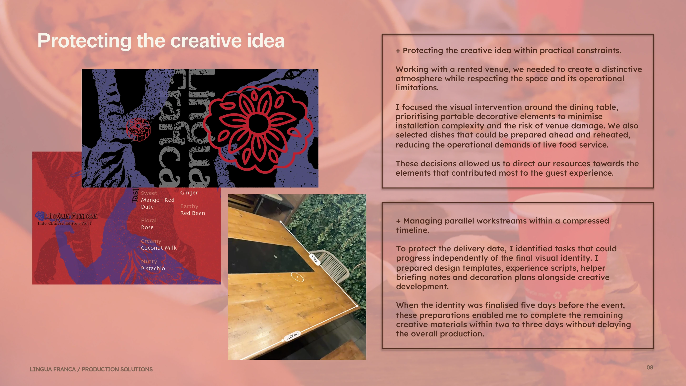
Read page 8: Lingua Franca — Production solutions
08
Protecting the creative idea
LINGUA FRANCA / PRODUCTION SOLUTIONS
+ Protecting the creative idea within practical constraints.
Working with a rented venue, we needed to create a distinctive
atmosphere while respecting the space and its operational
limitations.
I focused the visual intervention around the dining table,
prioritising portable decorative elements to minimise
installation complexity and the risk of venue damage. We also
selected dishes that could be prepared ahead and reheated,
reducing the operational demands of live food service.
These decisions allowed us to direct our resources towards the
elements that contributed most to the guest experience.
+ Managing parallel workstreams within a compressed
timeline.
To protect the delivery date, I identified tasks that could
progress independently of the final visual identity. I
prepared design templates, experience scripts, helper
briefing notes and decoration plans alongside creative
development.
When the identity was finalised five days before the event,
these preparations enabled me to complete the remaining
creative materials within two to three days without delaying
the overall production.
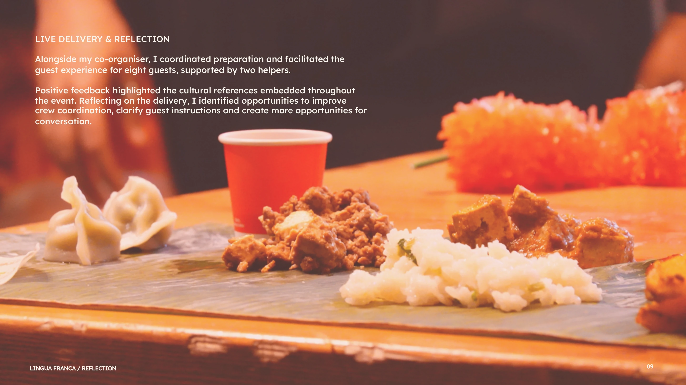
Read page 9: Lingua Franca — Reflection
LIVE DELIVERY & REFLECTION
Alongside my co-organiser, I coordinated preparation and facilitated the
guest experience for eight guests, supported by two helpers.
Positive feedback highlighted the cultural references embedded throughout
the event. Reflecting on the delivery, I identified opportunities to improve
crew coordination, clarify guest instructions and create more opportunities for
conversation.
09
LINGUA FRANCA / REFLECTION

Read page 10: Unseen Marine — Concept
PROJECT 02 / INDIVIDUAL PROJECT / MAY 2024
UNSEEN MARINE
What if seafood carried an SOS from the ocean?
A four-course narrative dining experience revealing hidden environmental
issues behind seafood consumption.
MY ROLE
Research · Concept development · Food prototyping · Experience production
CONTEXT
Inspired by Netflix documentary Seaspiracy, I investigated seafood consumption and
its environmental implications, translating the research into a meal that reveals one
issue at a time.
UNSEEN MARINE / CONCEPT
10
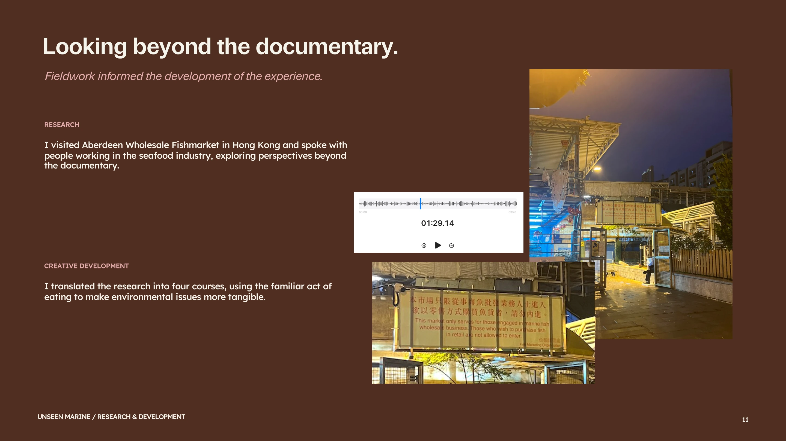
Read page 11: Unseen Marine — Research
Looking beyond the documentary.
Fieldwork informed the development of the experience.
RESEARCH
I visited Aberdeen Wholesale Fishmarket in Hong Kong and spoke with
people working in the seafood industry, exploring perspectives beyond
the documentary.
CREATIVE DEVELOPMENT
I translated the research into four courses, using the familiar act of
eating to make environmental issues more tangible.
UNSEEN MARINE / RESEARCH & DEVELOPMENT
11

Read page 12: Unseen Marine — Menu development
Four courses. Four issues.
Recipe testing, preparation and presentation translated each issue into an edible narrative.
Starter
Salmon carpaccio
Fish farming and industrialisation.
Soup
Seafood chowder
Overconsumption and ecosystem
imbalance.
Main
Grilled sea bream
Microplastics made visible through
coloured couscous.
UNSEEN MARINE / MENU DEVELOPMENT
12
To end with
Fishless fish cake
Reimagining our relationship with
seafood.
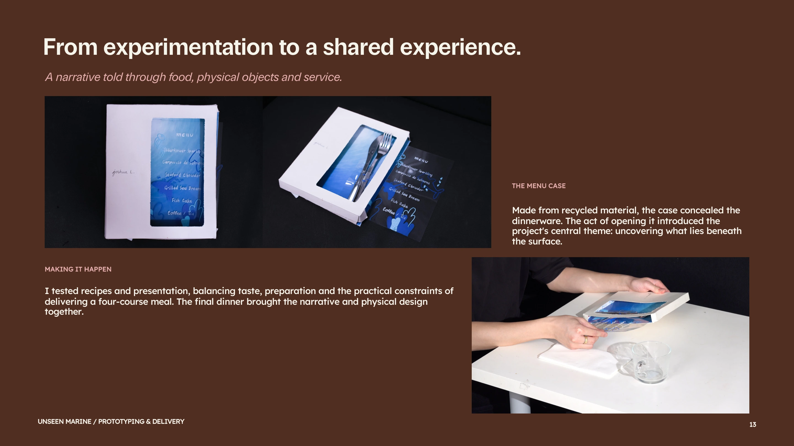
Read page 13: Unseen Marine — Prototyping and delivery
From experimentation to a shared experience.
A narrative told through food, physical objects and service.
MAKING IT HAPPEN
I tested recipes and presentation, balancing taste, preparation and the practical constraints of
delivering a four-course meal. The final dinner brought the narrative and physical design
together.
UNSEEN MARINE / PROTOTYPING & DELIVERY
13
THE MENU CASE
Made from recycled material, the case concealed the
dinnerware. The act of opening it introduced the
project's central theme: uncovering what lies beneath
the surface.

Read page 14: Day Night Production — Concept
PROJECT 03 / HONG KONG / 2025
DAY NIGHT
PRODUCTION
An identity that evolves with the production.
@daynight.production
THE BRIEF
As Lead Graphic Designer for 白夜製作 (Day Night Production)
and its show 《白狐之夜》, I owned the identity and campaign
materials from early recruitment to final performance.
THE APPROACH
Working with the director and production team, I adapted the
visual direction and deliverables to meet the changing
requirements of each production phase.
Lead Graphic Designer · Creative collaboration · Campaign delivery
JADE LAM / PORTFOLIO 2026
14
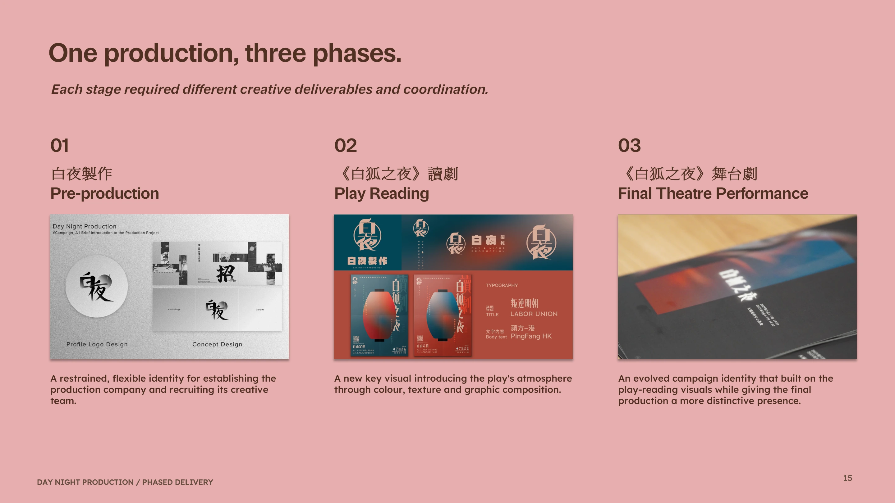
Read page 15: Day Night Production — Three phases
One production, three phases.
Each stage required different creative deliverables and coordination.
01
白夜製作
Pre-production
A restrained, flexible identity for establishing the
production company and recruiting its creative
team.
02
《白狐之夜》讀劇
Play Reading
A new key visual introducing the play's atmosphere
through colour, texture and graphic composition.
03
《白狐之夜》舞台劇
Final Theatre Performance
An evolved campaign identity that built on the
play-reading visuals while giving the final
production a more distinctive presence.
DAY NIGHT PRODUCTION / PHASED DELIVERY
15
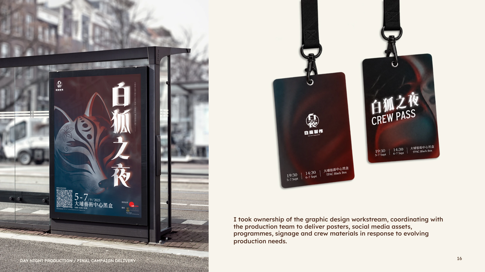
Read page 16: Day Night Production — Campaign delivery
DAY NIGHT PRODUCTION / FINAL CAMPAIGN DELIVERY
16
I took ownership of the graphic design workstream, coordinating with
the production team to deliver posters, social media assets,
programmes, signage and crew materials in response to evolving
production needs.
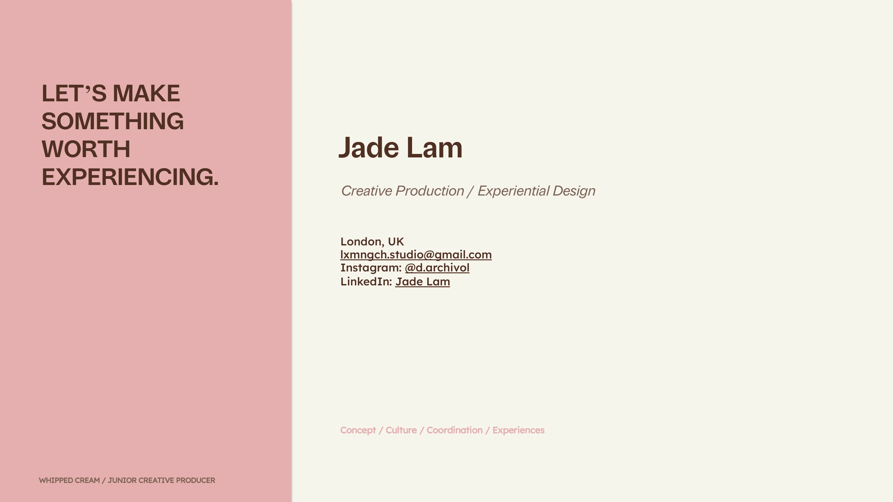
Read page 17: Contact
LET’S MAKE
SOMETHING
WORTH
EXPERIENCING.
Jade Lam
Creative Production / Experiential Design
London, UK
lxmngch.studio@gmail.com
Instagram: @d.archivol
LinkedIn: Jade Lam
Concept / Culture / Coordination / Experiences
WHIPPED CREAM / JUNIOR CREATIVE PRODUCER